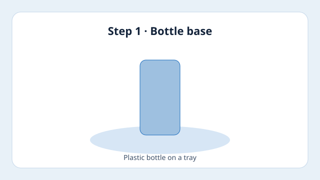
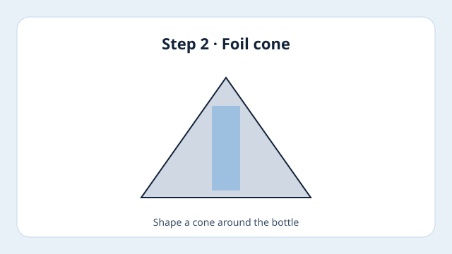
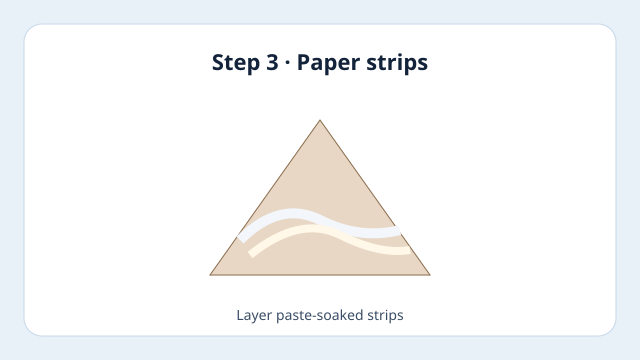
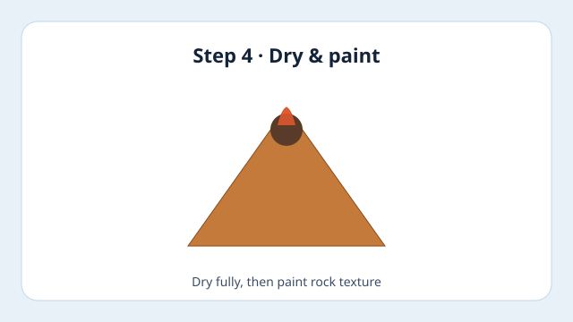
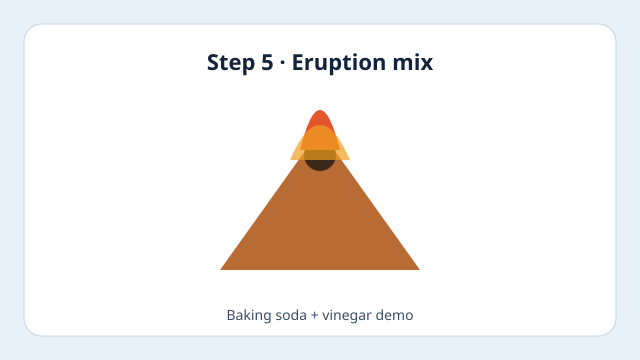

How to Make a Paper Mache Volcano (Step-by-Step)
Build a sturdy paper mache volcano for a science demo. The same method works if your worksheet spells it papier mache — mix paste, wrap strips, dry, then erupt.
-
1 · Bottle base

Place an empty plastic bottle upright on a cardboard tray. Tape the bottle lightly so it does not tip while you build the cone.
-
2 · Foil cone

Crumple foil into a mountain shape around the bottle, leaving the bottle mouth open as the crater. Aim for a wide base so the volcano stands alone.
-
3 · Paper strips + paste

Mix the stiff paper mache paste (1:1 flour to water). Dip newspaper strips, wipe excess, and overlap in alternating directions for 4–5 layers. Keep the crater hole clear.
-
4 · Dry & paint

Dry 48–72 hours with airflow until the shell feels light and hard. Paint brown/grey rock texture; optional white “smoke” near the rim.
-
5 · Eruption mix

Put 2–3 tbsp baking soda in the bottle, add a few drops of dish soap and red food color, then pour in vinegar. Demo outdoors or on a tray.
FAQ
Can I use the same paper mache paste for volcano projects?
Yes. For volcano shells we prefer the stiffer 1:1 flour-to-water paper mache paste from the recipe page so the cone holds shape. Let each two-layer pass dry before adding more if the room is humid.
Finished the demo? Fold some paper airplane designs while the shell cures, or browse more paper mache ideas.